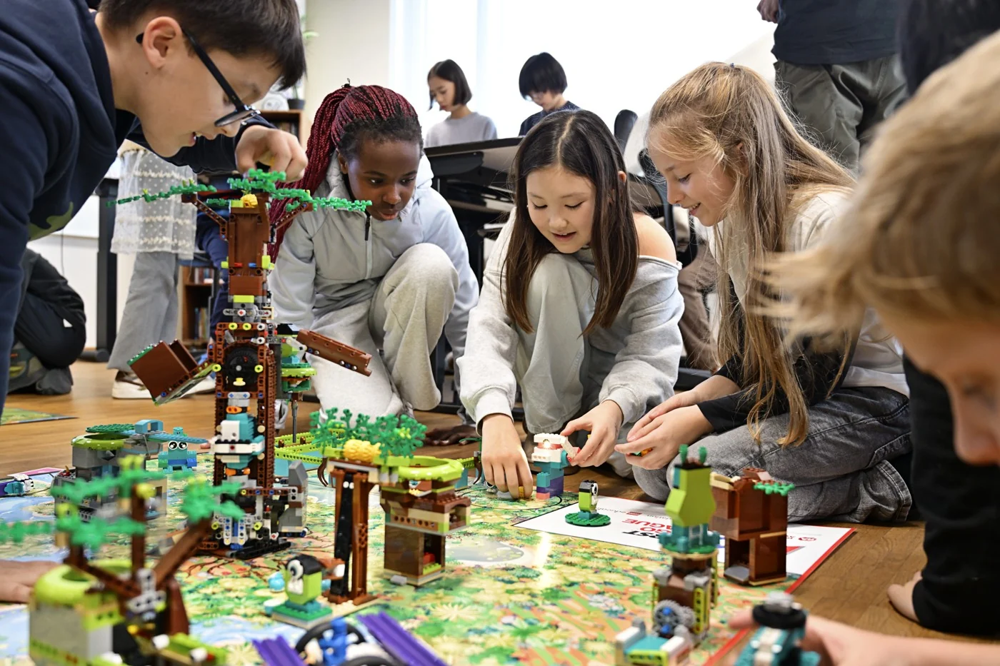

Contactos · Fundação da Juventude
Fala connosco.
fll@fjuventude.ptEscolas e professores
Para dúvidas sobre inscrições, kits ou formação, indica o nome da escola ou agrupamento e o que gostarias de esclarecer.
Parcerias
Se representas uma empresa ou instituição, escreve-nos com uma breve descrição de como gostarias de colaborar.

A tua escola entra em jogo?
Early bird até 15 de novembro de 2026.